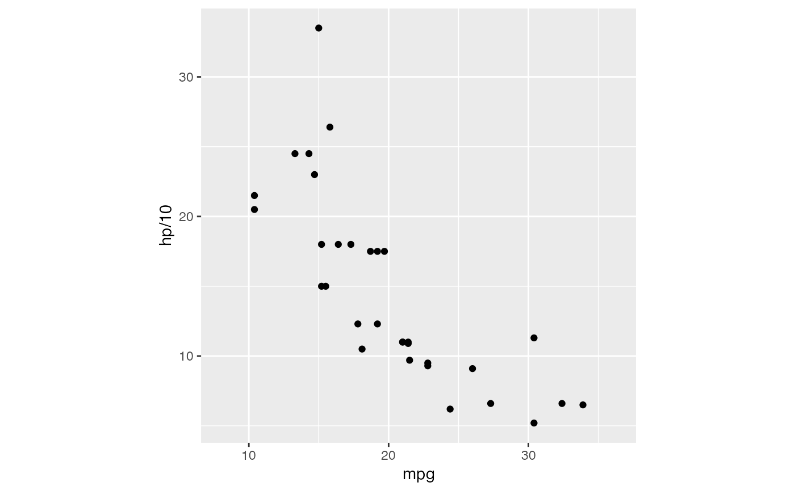
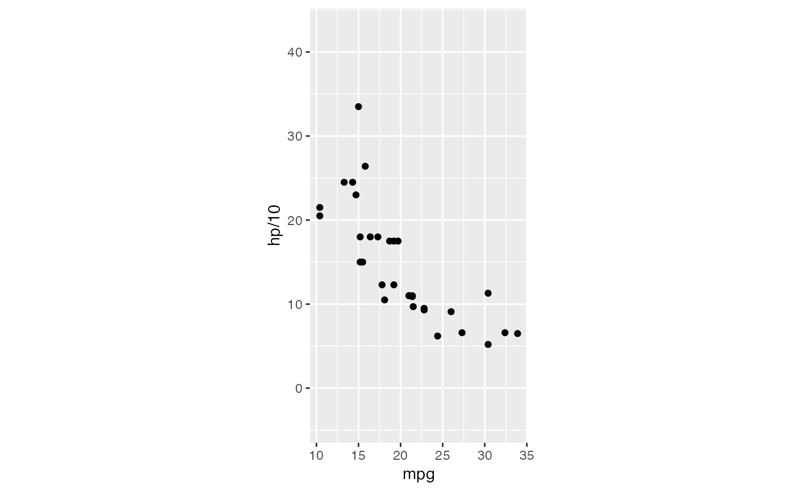
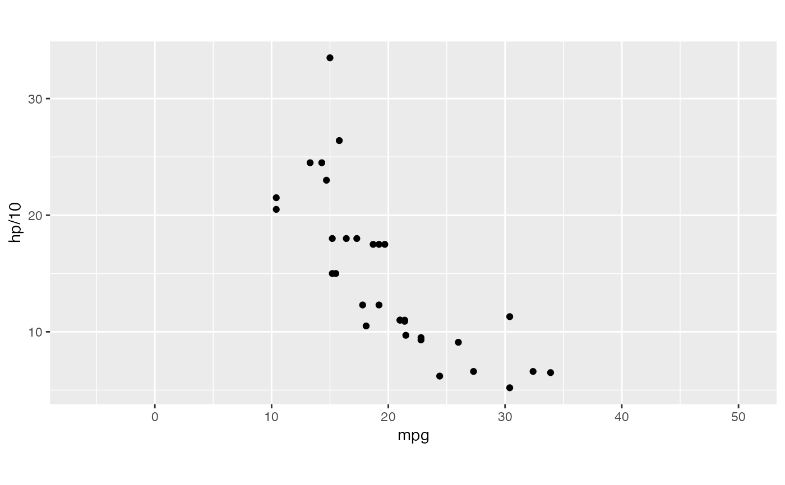
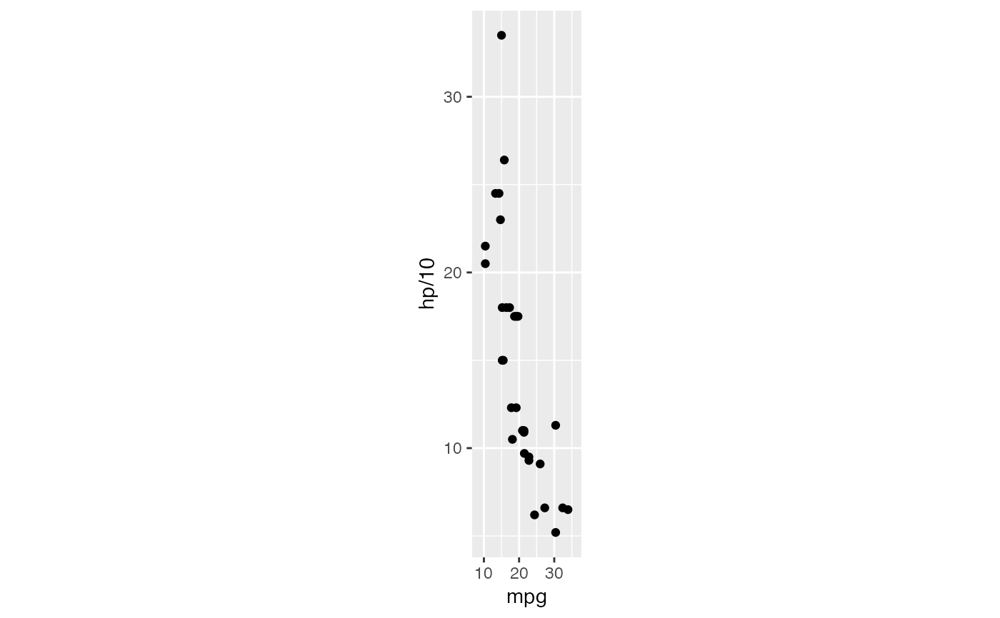

Cartesian coordinates and plotting window with fixed aspect ratios
Source:R/coord-rect.r
coord_rect.RdGeometric data analysis often requires that coordinates lie on
the same scale. The coordinate system CoordRect, alias CoordSquare,
provides control of both coordinate and window aspect ratios.
Usage
coord_rect(
ratio = 1,
window_ratio = ratio,
xlim = NULL,
ylim = NULL,
expand = TRUE,
clip = "on"
)Arguments
- ratio
aspect ratio, expressed as
y / x- window_ratio
aspect ratio of plotting window
- xlim, ylim
Limits for the x and y axes.
- expand
If
TRUE, the default, adds a small expansion factor to the limits to ensure that data and axes don't overlap. IfFALSE, limits are taken exactly from the data orxlim/ylim.- clip
Should drawing be clipped to the extent of the plot panel? A setting of
"on"(the default) means yes, and a setting of"off"means no. In most cases, the default of"on"should not be changed, as settingclip = "off"can cause unexpected results. It allows drawing of data points anywhere on the plot, including in the plot margins. If limits are set viaxlimandylimand some data points fall outside those limits, then those data points may show up in places such as the axes, the legend, the plot title, or the plot margins.
Examples
# ensures that the resolutions of the axes and the dimensions of the plotting
# window respect the specified aspect ratios
p <- ggplot(mtcars, aes(mpg, hp/10)) + geom_point()
p + coord_rect(ratio = 1)

p + coord_rect(ratio = 1, window_ratio = 2)

p + coord_rect(ratio = 1, window_ratio = 1/2)

p + coord_rect(ratio = 5)

p + coord_rect(ratio = 1/5)

p + coord_rect(xlim = c(15, 30))
p + coord_rect(ylim = c(15, 30))